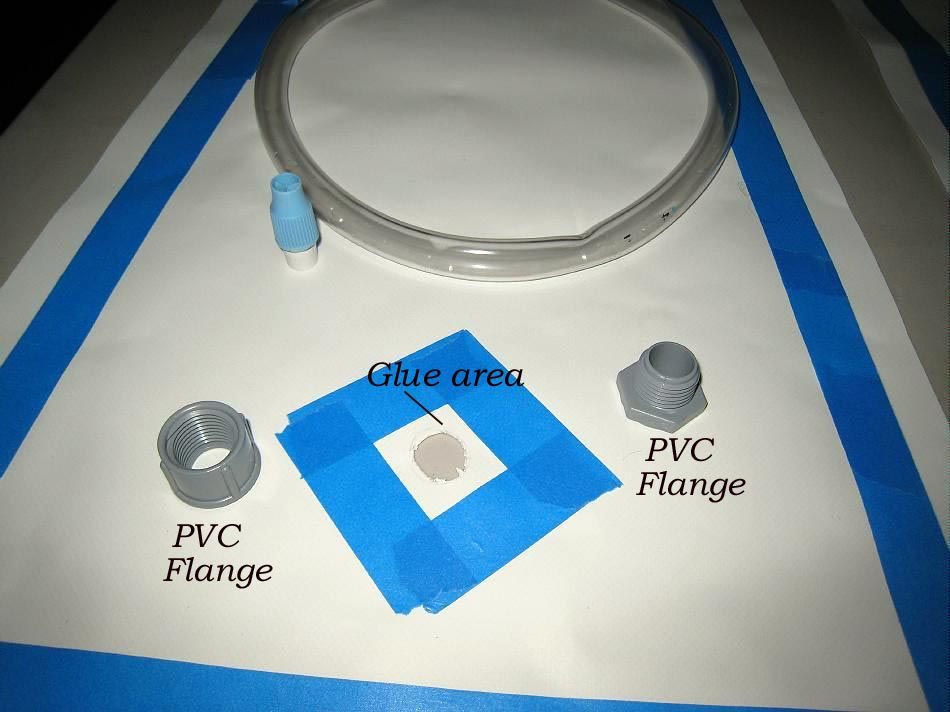

| PVC Floatation Bag ( page 5 of 8 ) | Menu Previous Page Next Page |
|

Before attaching the flange, mask off a small glue area on the inside and outside of the PVC skin that will attach to the flange. Cut out a hole slightly smaller than the threaded flange section. This will allow a tight fit of the flange to the PVC skin material.
|
|